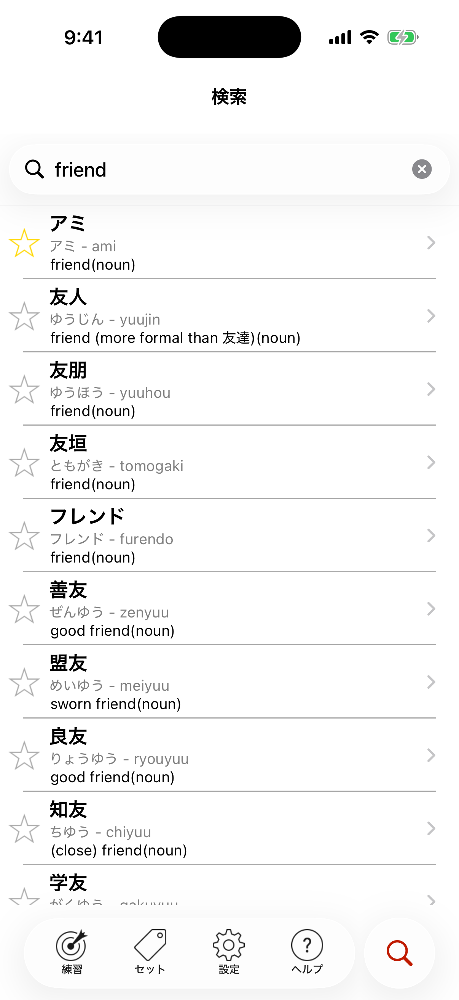

検索
200,000語以上のJapanese in a Flash!の辞書を、英語、ローマ字、ひらがな、漢字で1秒以内に検索できます。

左側のスターが見えますか？ 1回タップすると、その単語がすぐにMy Starred Wordsセットに追加されます！
検索は、単語全体で探し、動詞は辞書形で入力するといちばんうまくいきます。どちらの言語でも、複数の語をまとめて検索できます。
単語の最後に?を付けてみてください。たとえばjapan?で検索すると、Japan、Japanese、Japanofile、Japanasaurus Rexなどが見つかります。